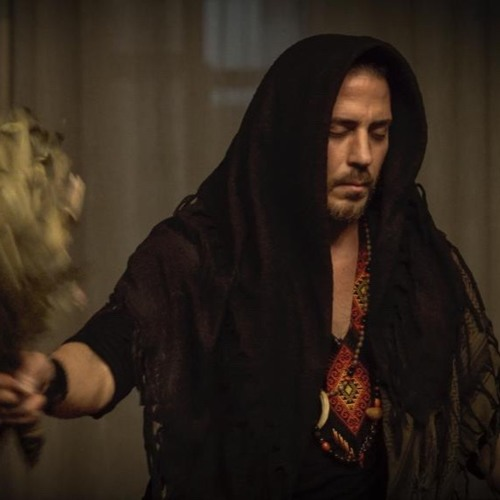

ШАМАНСКИЙ ОПЫТ - ЭТО ВИЗУАЛЬНОЕ И ЗВУКОВОЕ ПУТЕШЕСТВИЕ ПОД РУКОВОДСТВОМ ШАМАНА ОМАРА (БИОГРАФИЯ НИЖЕ). ИСПОЛЬЗУЯ ГОДЫ В ДЖУНГЛЯХ И ЦЕЛУЮ ЖИЗНЬ МИСТИКИ, ШАМАН ОМАР СОЧЕТАЕТ В СЕБЕ ДРЕВНИЕ ШАМАНСКИЕ ТЕХНОЛОГИИ, ТАКИЕ КАК ФЛЕЙТЫ, БАРАБАНЫ И ИКАРОСЫ, МАНТРЫ И Т. Д., С ПОТРЯСАЮЩИМИ ВИЗУАЛЬНЫМИ ОБРАЗАМИ 4K, ЧТОБЫ ПРИНЯТЬ ГОСТЕЙ В ДЕЙСТВИТЕЛЬНО МОЩНОЕ И ВДОХНОВЛЯЮЩЕЕ ПУТЕШЕСТВИЕ ... ВНУТРЬ СЕБЯ.
Это видео было снято в Остине, Техас, март 2018 года. «Пробуждение: шаманский опыт в 4k» - Шаман Омар
Шаман Омар - Мистик, Шаман, Аяуаскеро, Учитель и Активист. Он обеспечивает четкий мост между древней шаманской мудростью наших предков с пониманием «современного» дня. Шаман Омар провел около 10 000 духовных искателей через шаманские церемонии по всему миру. Широко рассматривающийся, как один из самых талантливых шаманских флейтистов в мире,
Омар руководил одними из самых больших массовых медитаций в Майами с помощью своей удивительной и всепроникающней музыки. Недавно он выпустил свой альбом для медитации на шаманской флейте «Пробуждение: шаманское путешествие», который теперь доступен в iTunes.
Известный как «Городской шаман», или «Неошаман», он еженедельно проводит свои мастер-классы в ведущих центрах и студиях событий в Нью-Йорке, Лос-Анджелесе, Майами и по всей Америке. В дополнение к ведущим семинарам по шаманскому дыханию и медитации он также выступает на различные темы перед корпорациями, организациями и на частных мероприятиях. Он также является директором выступающих в Универсальном Теогностическом обществе, международном некоммерческом гражданском обществе, посвященном шаманской мистике.
Массовая Медитация День Земли 2017 | Майами
Другие кадры из серии «Пробуждение»: «Дух воды» (Третий Глаз) Дух воды